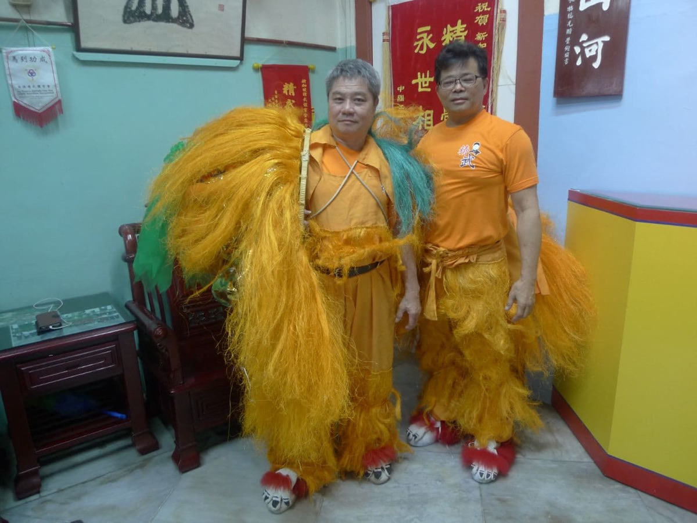
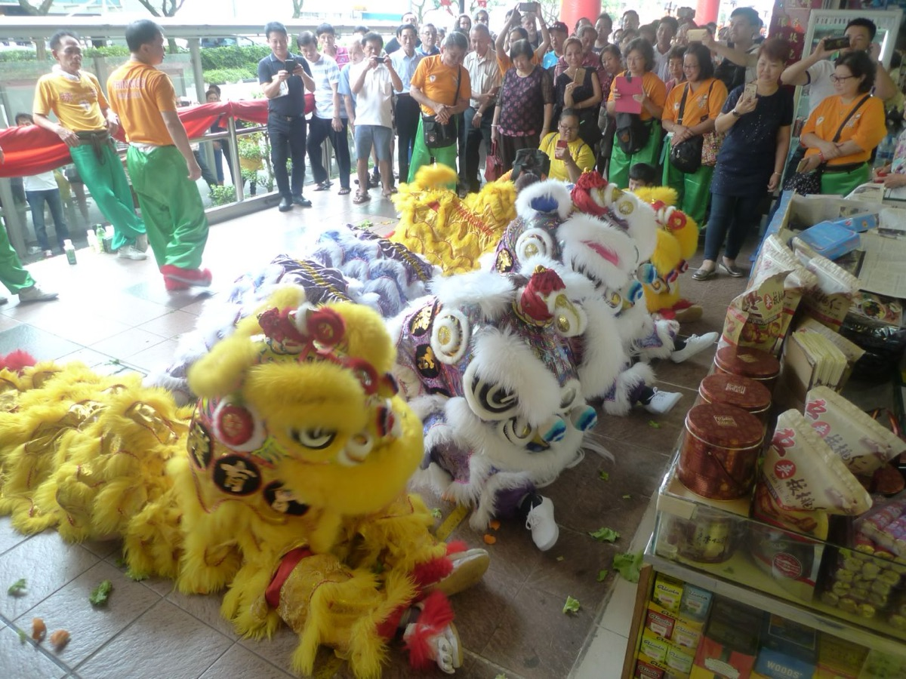
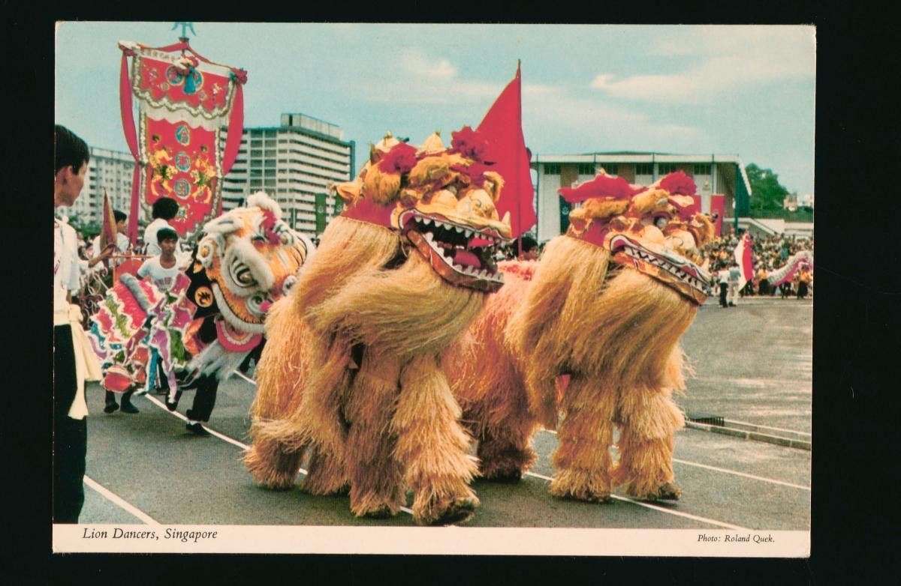

<meta charset="utf-8">
<meta name="viewport" content="width=device-width, initial-scale=1, viewport-fit=cover">
<title>Awaken the Lion</title>
<meta name="claude:viewport-fit-sides" content="cover">
<link rel="preconnect" href="https://fonts.googleapis.com">
<link rel="preconnect" href="https://fonts.gstatic.com" crossorigin>
<link rel="stylesheet" href="https://fonts.googleapis.com/css2?family=Gloock&family=Figtree:wght@400;600;700&display=swap">
<link rel="stylesheet" href="https://fonts.googleapis.com/css2?family=Ma+Shan+Zheng&text=醒狮点睛采青鼓钹锣新手徒弟师兄傅公&display=swap">
<style>
/* Layout: one lacquered stage. Left: the real lions (16:9 video in play, the act's Singapore photo between acts). Right: the note highway in play (its circles are the buttons), the act briefing between acts. Quiz and field guide below. Deliberately single dark theme: a night street performance. */
:root {
  --ink: #1c0a09;
  --panel: #2b110f;
  --line: #4c2620;
  --text: #f7e8d0;
  --muted: #c8a888;
  --red: #e8503f;
  --gold: #f2c14e;
  --jade: #4fb58e;
  --lacquer: #b8281f;
  --display: "Gloock", Georgia, "Times New Roman", serif;
  --han: "Ma Shan Zheng", "Kaiti SC", "STKaiti", "KaiTi", serif;
  --body: "Figtree", system-ui, -apple-system, "Segoe UI", sans-serif;
  color-scheme: dark;
}
[hidden] { display: none !important; }
html, body { background: var(--ink); color: var(--text); }
body { font-family: var(--body); font-size: 16px; line-height: 1.55; }
a { color: var(--gold); }
.wrap {
  max-width: 1040px; margin: 0 auto;
  padding-block: 24px 48px;
  padding-left: max(16px, env(safe-area-inset-left, 0px));
  padding-right: max(16px, env(safe-area-inset-right, 0px));
  display: grid; gap: 20px;
}
header { display: flex; align-items: flex-end; gap: 16px; flex-wrap: wrap; }
.mark { font-family: var(--han); font-size: 64px; line-height: 1; color: var(--gold); }
header h1 { font-family: var(--display); font-weight: 400; font-size: 34px; line-height: 1.1; margin: 0; text-wrap: balance; }
header p { margin: 4px 0 0; color: var(--muted); max-width: 60ch; }

/* ---- stage ---- */
.stage {
  position: relative; border: 1px solid var(--line); border-radius: 6px; overflow: hidden; background: var(--panel);
  display: grid; grid-template-columns: minmax(0, 60fr) minmax(0, 40fr); grid-template-areas: "lion hw"; height: 500px;
}
.lion { grid-area: lion; position: relative; min-width: 0; background: #000; }
.lion video, .lion .still { position: absolute; inset: 0; width: 100%; height: 100%; object-fit: cover; display: block; }
.lion video { object-fit: contain; }
.lion .tag {
  position: absolute; left: 0; right: 0; bottom: 0; padding: 36px 14px 12px;
  background: linear-gradient(to top, color-mix(in srgb, var(--ink) 92%, transparent), transparent);
  display: grid; gap: 2px;
}
.lion .act { font-size: 14px; font-weight: 600; }
.lion .src { font-size: 11px; color: var(--muted); }
/* Absolutely placed in its grid area, so the canvas never sizes its row. In normal flow its pixel buffer
   (3x on iPhones) grew the auto-sized row on every resize until the briefing was thousands of pixels tall. */
#game { grid-area: hw; position: absolute; inset: 0; display: block; width: 100%; height: 100%; touch-action: none; -webkit-user-select: none; user-select: none; }
.hud {
  position: absolute; top: 10px; right: 12px; display: flex; gap: 14px; z-index: 3;
  font-variant-numeric: tabular-nums; font-size: 13px; color: var(--muted); pointer-events: none;
}
.hud b { color: var(--text); font-weight: 700; }

.brief {
  grid-area: hw; z-index: 2; background: var(--panel); border-left: 1px solid var(--line);
  overflow-y: auto; display: flex; flex-direction: column;
  padding: 22px clamp(16px, 4vw, 36px);
}
.brief .inner { margin-block: auto; display: grid; gap: 16px; }
.brief p { margin: 0; max-width: 52ch; }
.eyebrow { font-size: 12px; text-transform: uppercase; letter-spacing: .12em; color: var(--gold); font-weight: 700; }
.head { display: flex; gap: 16px; align-items: center; }
.head .han { font-family: var(--han); font-size: 64px; line-height: 1; color: var(--gold); flex: none; }
.head h2 { margin: 2px 0 0; font-family: var(--display); font-weight: 400; font-size: 30px; line-height: 1.1; text-wrap: balance; }
.muted { color: var(--muted); font-size: 14px; }

.steps { list-style: none; margin: 0; padding: 0; display: grid; grid-template-columns: repeat(3, minmax(0, 1fr)); gap: 8px; }
.steps li { border-top: 3px solid var(--line); padding-top: 6px; display: grid; gap: 0; font-size: 12px; color: var(--muted); }
.steps .han { font-family: var(--han); font-size: 20px; line-height: 1.2; }
.steps li.now { border-color: var(--gold); color: var(--text); }
.steps li.now .han { color: var(--gold); }
.steps li.done { border-color: var(--jade); }
.steps li.done b { color: var(--jade); font-variant-numeric: tabular-nums; }

.chips { display: flex; flex-wrap: wrap; gap: 8px; }
.chip {
  display: inline-flex; align-items: center; gap: 6px; font-size: 13px; color: var(--muted);
  border: 1px dashed var(--line); border-radius: 999px; padding: 3px 12px 3px 8px;
}
.chip .han { font-family: var(--han); font-size: 18px; line-height: 1; color: var(--muted); }
.chip.on { border: 1px solid var(--c); color: var(--text); }
.chip.on .han { color: var(--c); }
.chip em { font-style: normal; font-size: 10px; font-weight: 700; text-transform: uppercase; letter-spacing: .1em; color: var(--ink); background: var(--gold); border-radius: 3px; padding: 1px 5px; }

.actions { display: flex; flex-wrap: wrap; gap: 10px 16px; align-items: center; }
.btn {
  font: 700 15px var(--body); color: var(--ink); background: var(--gold); text-decoration: none;
  border: 1px solid var(--gold); border-radius: 3px; padding: 11px 20px; cursor: pointer;
}
.btn:hover { filter: brightness(1.08); }
.btn:disabled { opacity: .6; cursor: wait; }
.btn.ghost { background: transparent; color: var(--text); border-color: var(--line); }
.btn:focus-visible, .opt:focus-visible { outline: 2px solid var(--text); outline-offset: 2px; }
.err { color: var(--red); font-size: 14px; }
.keys { display: flex; gap: 8px; flex-wrap: wrap; font-size: 13px; color: var(--muted); }
.keys span { border: 1px solid var(--line); border-radius: 3px; padding: 2px 8px; }
kbd { font: 700 12px var(--body); color: var(--text); }

@media (max-width: 639px) {
  .stage { grid-template-columns: minmax(0, 1fr); grid-template-rows: auto minmax(440px, auto); grid-template-areas: "lion" "hw"; height: auto; }
  .lion { aspect-ratio: 16 / 9; }
  .brief { border-left: 0; border-top: 1px solid var(--line); padding-block: 18px; }
  .brief .inner { gap: 12px; }
  .head .han { font-size: 48px; }
  .head h2 { font-size: 24px; }
}

/* ---- end-of-game result dialog ---- */
#result {
  width: min(560px, calc(100% - 32px)); max-height: calc(100% - 32px); overflow-y: auto;
  background: var(--panel); color: var(--text); border: 1px solid var(--line); border-top: 3px solid var(--gold);
  border-radius: 6px; padding: 26px clamp(18px, 4vw, 30px) 24px;
}
#result::backdrop { background: color-mix(in srgb, var(--ink) 82%, transparent); backdrop-filter: blur(3px); }
#result .x { position: absolute; top: 10px; right: 10px; margin: 0; }
#result .x button { font: 22px/1 var(--body); color: var(--muted); background: none; border: 0; padding: 6px 10px; cursor: pointer; border-radius: 3px; }
#result .x button:hover { color: var(--text); }
#result .x button:focus-visible { outline: 2px solid var(--text); }
.res { display: grid; gap: 18px; }
.res-top { display: flex; gap: 20px; align-items: center; }
.seal {
  flex: none; width: 92px; height: 92px; display: grid; place-items: center; transform: rotate(-4deg);
  background: var(--lacquer); border: 3px double var(--gold); border-radius: 6px;
  font-family: var(--han); color: var(--text); font-size: 36px; line-height: 1;
  writing-mode: vertical-rl; letter-spacing: .05em; box-shadow: 0 0 0 4px color-mix(in srgb, var(--lacquer) 30%, transparent);
  animation: stamp .45s cubic-bezier(.2, 1.6, .4, 1) both;
}
@keyframes stamp { from { transform: rotate(-4deg) scale(1.6); opacity: 0; } to { transform: rotate(-4deg) scale(1); opacity: 1; } }
@media (prefers-reduced-motion: reduce) { .seal { animation: none; } }
.res h2 { margin: 2px 0 2px; font-family: var(--display); font-weight: 400; font-size: 32px; line-height: 1.1; }
.res .pinyin { color: var(--gold); font-size: 14px; }
.res p { margin: 0; max-width: 52ch; }
.stats { display: grid; grid-template-columns: repeat(3, minmax(0, 1fr)); gap: 8px; border-block: 1px solid var(--line); padding-block: 12px; }
.stats div { display: grid; gap: 0; }
.stats b { font-family: var(--display); font-weight: 400; font-size: 26px; font-variant-numeric: tabular-nums; line-height: 1.1; }
.stats span { font-size: 12px; color: var(--muted); text-transform: uppercase; letter-spacing: .08em; }
.acts-line { font-size: 13px; color: var(--muted); font-variant-numeric: tabular-nums; }
.ladder { list-style: none; margin: 0; padding: 0; display: grid; grid-template-columns: repeat(5, minmax(0, 1fr)); gap: 4px; }
.ladder li { display: grid; justify-items: center; gap: 2px; padding: 8px 2px 6px; border-radius: 4px; border: 1px solid var(--line); color: var(--muted); text-align: center; font-size: 11px; line-height: 1.25; }
.ladder .han { font-family: var(--han); font-size: 20px; line-height: 1.1; }
.ladder li.got { border-color: color-mix(in srgb, var(--gold) 45%, var(--line)); color: var(--text); }
.ladder li.got .han { color: var(--gold); }
.ladder li.you { background: var(--lacquer); border-color: var(--gold); color: var(--text); }
.ladder li.you .han { color: var(--text); }
.ladder em { font-style: normal; font-variant-numeric: tabular-nums; opacity: .8; }


/* ---- quiz ---- */
.section-title { margin: 8px 0 0; font-family: var(--display); font-weight: 400; font-size: 26px; }
.quiz { display: grid; grid-template-columns: repeat(auto-fit, minmax(280px, 1fr)); gap: 18px 28px; }
.q { display: grid; gap: 8px; align-content: start; }
.q p { margin: 0; font-weight: 600; }
.opts { display: flex; flex-wrap: wrap; gap: 6px; }
.opt { font: 14px var(--body); color: var(--text); background: transparent; border: 1px solid var(--line); border-radius: 3px; padding: 6px 10px; cursor: pointer; }
.opt.right { border-color: var(--jade); background: color-mix(in srgb, var(--jade) 25%, transparent); }
.opt.wrong { border-color: var(--red); background: color-mix(in srgb, var(--red) 20%, transparent); }
.opt:disabled { cursor: default; }
.why { font-size: 13px; color: var(--muted); }
#qscore { margin: 0; }

.real { display: grid; grid-template-columns: repeat(auto-fit, minmax(260px, 1fr)); gap: 20px 28px; align-items: start; }
.real figure { margin: 0; display: grid; gap: 6px; min-width: 0; }
.real figcaption { font-size: 13px; color: var(--muted); }
.real img { width: 100%; border-radius: 4px; display: block; }
.real audio { width: 100%; }

.guide { display: grid; grid-template-columns: repeat(auto-fit, minmax(220px, 1fr)); gap: 20px 28px; padding-top: 8px; border-top: 1px solid var(--line); }
.guide h3 { margin: 0 0 4px; font-family: var(--display); font-weight: 400; font-size: 20px; }
.guide p { margin: 0; color: var(--muted); font-size: 15px; min-width: 0; }
.sources { font-size: 13px; color: var(--muted); display: grid; gap: 6px; }
.sources p { margin: 0; }
.sources ul { margin: 0; padding-left: 18px; display: grid; gap: 2px; }
@media (max-width: 520px) { .mark { font-size: 48px; } header h1 { font-size: 26px; } }
</style>

<main class="wrap">
  <header>
    <div class="mark" aria-hidden="true">醒狮</div>
    <div>
      <h1>Awaken the Lion</h1>
      <p>A rhythm game about Singapore's lion dance. Drum, crash and gong along with a real lion dance performance at the National Museum of Singapore, and learn what each part of the dance means.</p>
    </div>
  </header>

  <section class="stage" aria-label="Game">
    <div class="lion">
      <video id="lionvid" muted playsinline preload="auto" poster="lion-media/nms-poster.jpg" src="lion-media/nms-performance.mp4" aria-label="Two yellow southern lions performing on stage at the National Museum of Singapore"></video>
      
      <div class="tag"><span class="act" id="actname">Lunar New Year lion dance</span><span class="src" id="src">Video: National Museum of Singapore</span></div>
    </div>
    <canvas id="game" aria-label="Note highway"></canvas>
    <div class="brief" id="brief" aria-live="polite"></div>
    <div class="hud" id="hud" hidden><span>Score <b id="score">0</b></span><span>Combo <b id="combo">0</b></span></div>
  </section>

  <dialog id="result" aria-labelledby="rank-title">
    <form method="dialog" class="x"><button aria-label="Close">×</button></form>
    <div id="result-body"></div>
  </dialog>


  <section id="quiz">
    <h2 class="section-title">Test yourself</h2>
    <div class="quiz" id="quizlist"></div>
    <p class="muted" id="qscore">Answer all four to see your score.</p>
  </section>

  <h2 class="section-title">Lion dance in Singapore</h2>
  <section class="real">
    <figure>
      
      <figcaption>Mr Lim Soin Khoon (left) of the Singapore Chin Woo Athletic Association with a troupe member, in northern lion (<i>bei shi</i>) costumes. He teaches beginners drumming and footwork first. Photo: <a href="https://www.roots.gov.sg/ich-landing/ich/lion-dance" target="_blank" rel="noopener">Roots.sg</a>.</figcaption>
    </figure>
    <figure>
      
      <figcaption>A lion dance troupe at a shopfront, bringing auspicious luck and good fortune. Photo: <a href="https://www.roots.gov.sg/ich-landing/ich/lion-dance" target="_blank" rel="noopener">Roots.sg</a>.</figcaption>
    </figure>
    <figure>
      
      <figcaption>A lion dance in Singapore, 1970s to 1980s. <a href="https://www.roots.gov.sg/Collection-Landing/listing/1192636" target="_blank" rel="noopener">Collection of National Museum of Singapore</a>.</figcaption>
    </figure>
    <figure>
      <figcaption><b>Watch the whole performance.</b> The game uses three sections of the National Museum of Singapore's 15-minute Lunar New Year lion dance, and your drum, cymbal and gong hits are cut from the same band. <a href="https://www.nationalmuseum.nhb.gov.sg/nms-online/resources/lion-dance-performance" target="_blank" rel="noopener">Watch it on NMS Online</a>.</figcaption>
    </figure>
  </section>

  <section class="guide">
    <div><h3>More than 1,500 years</h3><p>Lion dance is believed to be a martial performance dating back more than 1,500 years in China. Dancers in the lion costume move to drums, gongs and cymbals.</p></div>
    <div><h3>Northern and southern</h3><p>The northern lion (<i>bei shi</i>) has red or golden fur and usually comes in pairs. The southern lion (<i>nan shi</i>, or <i>xing shi</i>) comes from Guangdong and is the one most often seen in Singapore.</p></div>
    <div><h3>The drum leads</h3><p>Lion dance is driven mainly by the drum. Its cousin, the Hakka qilin dance, is driven by 45 cm cymbals instead of the 30 cm cymbals used for lions. A lion troupe bows low when it meets a qilin.</p></div>
    <div><h3>Who dances in Singapore</h3><p>Troupes perform at Chinese New Year, community centres and shop openings. They began with immigrants and clansmen, and today include Indian and Malay members too.</p></div>
  </section>

  <div class="sources">
    <p>Facts: National Heritage Board, Roots.sg:
      <a href="https://www.roots.gov.sg/ich-landing/ich/lion-dance" target="_blank" rel="noopener">Lion Dance (ICH-016)</a>,
      <a href="https://www.roots.gov.sg/stories-landing/stories/high-leaps-and-clashing-cymbals/story" target="_blank" rel="noopener">High Leaps and Clashing Cymbals</a> (MUSE SG, July 2023),
      <a href="https://www.roots.gov.sg/Collection-Landing/listing/1192056" target="_blank" rel="noopener">A lion dance</a> (National Museum of Singapore).</p>
    <p>Media, resized or trimmed for this page:</p>
    <ul>
      <li>Game video, soundtrack and instrument sounds: <a href="https://www.nationalmuseum.nhb.gov.sg/nms-online/resources/lion-dance-performance" target="_blank" rel="noopener">Lunar New Year Celebrations: Lion Dance Performance</a>, National Museum of Singapore, 2021. Three sections are used, and the notes were detected from the drum, cymbal and gong in its soundtrack.</li>
      <li>Photos: <a href="https://www.roots.gov.sg/ich-landing/ich/lion-dance" target="_blank" rel="noopener">Lion Dance (ICH-016)</a> on Roots.sg (Wan Qing Festival of Spring, shopfront, Mr Lim Soin Khoon), and National Museum of Singapore collection items <a href="https://www.roots.gov.sg/Collection-Landing/listing/1193699" target="_blank" rel="noopener">1193699</a> and <a href="https://www.roots.gov.sg/Collection-Landing/listing/1192636" target="_blank" rel="noopener">1192636</a>.</li>
    </ul>
  </div>
</main>

<script>
const $ = s => document.querySelector(s);
const cvs = $('#game'), ctx = cvs.getContext('2d');
const vid = $('#lionvid'), still = $('#still'), brief = $('#brief'), hudEl = $('#hud');
const css = getComputedStyle(document.documentElement);
const tok = n => css.getPropertyValue(n).trim();
const COL = { ink: tok('--ink'), panel: tok('--panel'), text: tok('--text'), muted: tok('--muted'), red: tok('--red'), gold: tok('--gold'), jade: tok('--jade') };
const HAN = tok('--han'), BODY = tok('--body');
const PERFECT = 0.07, GOOD = 0.14;
const REDUCE_MOTION = matchMedia('(prefers-reduced-motion: reduce)').matches;
const MEDIA = 'lion-media/';
const COUNT_IN = 0.5;
const FINE_POINTER = matchMedia('(pointer: fine)').matches;

const LANES = [
  { han: '鼓', name: 'Drum', key: 'D', col: COL.red, codes: ['KeyD', 'ArrowLeft'] },
  { han: '钹', name: 'Cymbal', key: 'F', col: COL.gold, codes: ['KeyF', 'ArrowDown'] },
  { han: '锣', name: 'Gong', key: 'J', col: COL.jade, codes: ['KeyJ', 'ArrowRight'] },
];

// Each act plays its own 45-second section of the performance (cut from 1:27, 4:22 and 12:00 of the original).
// Notes are [seconds from the section start, lane], detected from the soundtrack's drum, cymbal and gong bands.
const SEGS = [[0, 45], [45, 90], [90, 135]];
// Two thumbs: never ask for more than two notes within THUMB_WINDOW seconds of each other.
// When three would land together, the least important lane gives way (drum leads, gong marks phrases, cymbal fills).
const THUMB_WINDOW = 0.15;
const LANE_RANK = [0, 2, 1];
const CHARTS = [[[1.335,0],[1.858,0],[2.577,0],[2.879,0],[6.188,0],[6.49,0],[7.268,0],[7.546,0],[8.069,0],[8.603,0],[9.079,0],[10.495,0],[11.9,0],[13.015,0],[14.571,0],[15.743,0],[16.358,0],[16.672,0],[17.659,0],[17.949,0],[18.204,0],[19.609,0],[21.502,0],[23.557,0],[25.763,0],[27.133,0],[27.469,0],[27.759,0],[28.456,0],[29.304,0],[29.571,0],[29.965,0],[30.616,0],[32.67,0],[33.878,0],[34.284,0],[35.376,0],[36.455,0],[36.78,0],[37.442,0],[38.928,0],[39.799,0],[40.38,0],[40.728,0],[41.273,0],[41.889,0],[42.295,0],[42.632,0],[43.027,0],[43.375,0],[43.735,0],[44.13,0],[44.42,0],[44.722,0]],[[0.743,1],[0.79,0],[1.092,0],[1.452,1],[1.486,0],[1.788,0],[2.195,0],[2.845,1],[2.914,0],[3.193,0],[3.657,0],[3.901,1],[3.913,0],[4.284,0],[4.517,0],[4.528,1],[4.993,0],[5.26,1],[5.875,0],[5.875,1],[6.246,0],[6.479,1],[6.664,0],[7.152,0],[7.767,0],[7.791,1],[8.15,0],[8.371,1],[8.568,0],[9.068,0],[9.66,1],[9.683,0],[9.996,1],[10.02,0],[10.612,1],[11.332,1],[11.355,0],[11.657,1],[11.97,0],[12.62,0],[13.468,0],[13.967,0],[14.025,1],[14.304,0],[14.594,1],[14.757,0],[15.767,0],[16.626,1],[17.531,1],[17.729,0],[17.973,0],[18.181,1],[18.39,0],[18.808,1],[19.447,0],[19.447,1],[20.492,0],[20.805,0],[21.421,0],[21.92,1],[22.733,0],[23.058,1],[23.069,0],[23.418,1],[23.87,0],[24.172,0],[24.184,1],[24.509,0],[24.509,1],[25.159,0],[25.484,1],[26.123,1],[26.274,0],[26.993,0],[27.597,0],[27.829,0],[27.853,1],[28.572,1],[28.944,0],[29.188,1],[30.256,0],[30.488,1],[31.777,0],[31.777,1],[32.009,0],[32.241,0],[32.473,1],[33.1,1],[33.727,0],[33.75,1],[34.842,0],[34.842,1],[35.387,0],[36.467,0],[37.21,0],[38.336,0],[38.661,0],[39.068,0],[39.23,1],[39.393,0],[39.637,0],[39.973,1],[40.159,0],[41.46,1],[42.121,0],[42.203,1],[42.458,0],[42.783,1],[43.456,1],[43.642,0],[43.944,0],[44.118,1]],[[0.477,0],[0.767,0],[1.173,0],[1.487,0],[1.812,1],[1.881,0],[2.172,1],[2.195,0],[2.52,1],[2.578,0],[2.88,1],[3.286,0],[3.588,1],[4.006,0],[4.285,1],[4.621,1],[4.714,0],[4.726,2],[4.981,1],[5.33,1],[5.689,1],[6.038,1],[6.409,0],[7.094,1],[7.396,0],[7.419,2],[7.779,1],[10.891,0],[10.902,2],[11.111,1],[12.191,1],[14.35,0],[14.35,2],[14.397,1],[16.289,1],[16.301,0],[16.313,2],[16.928,2],[18.588,0],[18.588,2],[18.913,1],[19.122,0],[19.993,0],[19.993,2],[20.562,0],[21.502,0],[21.874,0],[21.874,2],[22.245,0],[22.245,1],[22.617,1],[22.628,0],[22.988,0],[23.348,0],[23.36,1],[23.708,1],[23.778,0],[24.056,1],[24.08,0],[24.405,1],[24.486,0],[24.799,0],[25.206,0],[25.531,0],[25.531,1],[25.879,1],[26.216,0],[26.216,2],[26.564,0],[26.912,0],[26.924,1],[27.296,0],[27.296,2],[27.528,1],[27.551,0],[28.004,0],[28.282,0],[28.898,0],[28.898,2],[28.956,1],[29.838,0],[30.245,1],[30.662,0],[30.918,0],[31.533,0],[31.533,2],[31.591,1],[31.893,0],[32.218,0],[32.218,2],[32.683,0],[32.868,1],[33.368,0],[33.368,2],[33.937,0],[33.937,2],[34.273,0],[34.517,0],[35.051,1],[35.399,1],[35.411,0],[35.759,0],[36.119,1],[36.526,1],[36.885,1],[36.885,2],[36.92,0],[37.28,1],[37.292,0],[37.652,1],[37.663,0],[38.035,0],[38.035,2],[38.418,1],[38.43,0],[38.801,0],[38.801,1],[39.161,1],[39.277,0],[39.277,2],[39.556,1],[39.579,0],[39.927,1],[40.043,0],[40.043,2],[40.299,1],[40.357,0],[40.694,1],[40.763,0],[41.065,1],[41.077,0],[41.088,2],[41.437,1],[41.506,0],[41.82,0],[41.82,1],[42.191,1],[42.238,0],[42.563,0],[42.957,1],[43.004,0],[43.329,0],[43.712,1],[43.782,0],[44.084,1],[44.42,0],[44.432,2],[44.502,1]]].map(twoThumbs);
const ACT_LANES = [[0], [0, 1], [0, 1, 2]];

function twoThumbs(chart) {
  const kept = [];
  for (const n of [...chart].sort((a, b) => a[0] - b[0])) {
    const near = kept.filter(k => n[0] - k[0] < THUMB_WINDOW);
    if (near.length < 2) { kept.push(n); continue; }
    const weakest = near.reduce((w, k) => LANE_RANK[k[1]] > LANE_RANK[w[1]] ? k : w);
    if (LANE_RANK[n[1]] < LANE_RANK[weakest[1]]) { kept.splice(kept.indexOf(weakest), 1); kept.push(n); }
  }
  return kept;
}

const ICH_CREDIT = 'Photo: Roots.sg, National Heritage Board';
const VIDEO_CREDIT = 'Lunar New Year performance. Video: National Museum of Singapore';
const STAGES = [
  { han: '点睛', name: 'Dotting the Eyes', travel: 1.8,
    photo: { src: 'roots-wanqing-child.jpg', alt: 'A young boy reaches out to touch the face of a yellow and red southern lion, beside its large eye', cap: 'A young participant interacts with the lion dance performers at the Wan Qing Festival of Spring, 2019.', credit: ICH_CREDIT },
    fact: 'Before a southern lion performs for the first time, a person of social standing paints its eyes. The ceremony gives the lion life, and bright, clear vision.',
    how: 'Hit the drum on its strongest beats.' },
  { han: '醒狮', name: 'The Lion Awakens', travel: 1.6,
    photo: { src: 'roots-nms-1193699.jpg', alt: 'A crowd of southern lions with large painted heads and white fur trim perform together in a street, in an old colour photograph', cap: 'A lion dance in Singapore, 1970s to 1980s.', credit: 'Collection of National Museum of Singapore' },
    fact: 'The southern lion is also called xing shi. 醒 (xing) means "awakened" and is considered auspicious. Northern lions usually come in pairs; a southern performance has just one.',
    how: 'Gold notes are cymbal crashes.' },
  { han: '采青', name: 'Plucking the Green', travel: 1.4,
    photo: { src: 'roots-wanqing-performance.jpg', alt: 'Two yellow southern lions rear up on a red stage, with a tray of greens and oranges laid on the floor in front of them', cap: 'Lion dance at the Wan Qing Festival of Spring, Sun Yat Sen Nanyang Memorial Hall, 2019.', credit: ICH_CREDIT },
    fact: 'In cai qing, the lion reaches a green vegetable hung up high and plucks it. Taking this treasure from the lion\'s mouth symbolises good fortune.',
    how: 'Green notes are the gong. The fastest act.' },
];

const QUIZ = [
  { q: 'What does 醒 (xing) in 醒狮 mean?', opts: ['Fierce', 'Awakened', 'Golden', 'Dancing'], a: 1,
    why: 'Xing shi, the southern lion, is the "awakened lion". The word is considered auspicious.' },
  { q: 'What does plucking the green (cai qing) symbolise?', opts: ['Good fortune', 'Victory in battle', 'Rain for the harvest', 'Long life'], a: 0,
    why: 'Getting the treasure from the lion\'s mouth symbolises fortune, wealth and prosperity.' },
  { q: 'Which instrument mainly drives the lion dance?', opts: ['Cymbals', 'Gong', 'Drum', 'Flute'], a: 2,
    why: 'The drum leads the lion. The Hakka qilin dance is the one driven by cymbals.' },
  { q: 'What does a lion dance beginner learn first?', opts: ['High-pole leaps', 'Balancing on the ball', 'Drumming and basic footwork', 'Plucking the green'], a: 2,
    why: 'Instructor Lim Soin Khoon of Singapore Chin Woo Athletic Association says beginners start with drumming and footwork, plus martial arts for stamina.' },
];

// ---------- audio ----------
let ac = null, bus = null, LAT = 0;
const BUF = {};
async function initAudio() {
  if (!ac) {
    ac = new (window.AudioContext || window.webkitAudioContext)();
    const comp = ac.createDynamicsCompressor();
    bus = ac.createGain(); bus.gain.value = 0.9;
    bus.connect(comp).connect(ac.destination);
  }
  await ac.resume();
  LAT = ac.outputLatency || ac.baseLatency || 0;
  await Promise.all([loadVideo(), ...['nms-performance', 'hit-drum', 'hit-cymbal', 'hit-gong'].filter(n => !BUF[n]).map(async n => {
    const r = await fetch(MEDIA + n + '.wav');
    if (!r.ok) throw new Error(n);
    BUF[n] = await ac.decodeAudioData(await r.arrayBuffer());
  })]);
}
// Play the clip from memory so each act can jump to its section on any host,
// including servers that don't support partial (range) requests.
async function loadVideo() {
  if (vid.src.startsWith('blob:')) return;
  const r = await fetch(vid.getAttribute('src'));
  if (!r.ok) throw new Error('video');
  vid.src = URL.createObjectURL(await r.blob());
  await new Promise(res => vid.readyState >= 1 ? res() : vid.addEventListener('loadedmetadata', res, { once: true }));
}
function play(name, t, vol, offset = 0, dur) {
  const s = ac.createBufferSource(), g = ac.createGain();
  s.buffer = BUF[name]; g.gain.value = vol;
  s.connect(g).connect(bus); s.start(t, offset, dur);
  return { s, g };
}
const SOUND = [(t, v = 1) => play('hit-drum', t, v), (t, v = 1) => play('hit-cymbal', t, 0.9 * v), (t, v = 1) => play('hit-gong', t, 0.8 * v)];
const TRACK_VOL = 0.7;
function tick(t) {
  const o = ac.createOscillator(), g = ac.createGain();
  o.type = 'triangle'; o.frequency.value = 1500;
  g.gain.setValueAtTime(0.0001, t); g.gain.exponentialRampToValueAtTime(0.12, t + 0.005); g.gain.exponentialRampToValueAtTime(0.0001, t + 0.05);
  o.connect(g).connect(bus); o.start(t); o.stop(t + 0.1);
}

// ---------- state ----------
const G = { phase: 'intro', stage: 0, notes: [], t0: 0, endT: 0, seg: 0, track: null, vidTimer: 0, score: 0, combo: 0, best: 0, stats: null, results: [], flash: [0, 0, 0], pops: [] };
let L = {};

function resize() {
  const w = cvs.clientWidth, h = cvs.clientHeight, dpr = window.devicePixelRatio || 1;
  cvs.width = w * dpr; cvs.height = h * dpr; ctx.setTransform(dpr, 0, 0, dpr, 0, 0);
  L = { w, h };
}
addEventListener('resize', resize);
resize();

function hud() { $('#score').textContent = Math.round(G.score); $('#combo').textContent = G.combo; }
const clock = () => ac.currentTime - LAT;

function startStage() {
  hideBrief();
  if (matchMedia('(max-width: 639px)').matches) $('.stage').scrollIntoView({ block: 'start', behavior: REDUCE_MOTION ? 'auto' : 'smooth' });
  const st = STAGES[G.stage], [a, b] = SEGS[G.stage];
  const t0 = ac.currentTime + Math.max(st.travel, 3 * COUNT_IN) + 0.4;
  G.notes = CHARTS[G.stage].map(([t, lane]) => ({ t: t0 + t, lane }));
  G.t0 = t0; G.seg = a; G.endT = t0 + (b - a) + 0.4;
  for (let k = 3; k >= 1; k--) tick(t0 - k * COUNT_IN);
  G.track = play('nms-performance', t0, TRACK_VOL, a, b - a);
  showVideo(`Act ${G.stage + 1}: ${st.name}`);
  vid.pause(); vid.playbackRate = 1; vid.currentTime = a;
  clearTimeout(G.vidTimer);
  G.vidTimer = setTimeout(() => vid.play().catch(() => {}), (t0 + LAT - ac.currentTime) * 1000);
  G.stats = { perfect: 0, good: 0, miss: 0 }; G.combo = 0; G.phase = 'play'; hud();
}

// Keep the muted video on the same clock as the soundtrack the notes come from.
function syncVideo() {
  if (G.phase !== 'play' || vid.paused || vid.seeking) return;
  const want = G.seg + (clock() - G.t0), diff = want - vid.currentTime;
  if (Math.abs(diff) > 0.25) vid.currentTime = want;
  else vid.playbackRate = 1 + Math.max(-0.1, Math.min(0.1, diff * 0.8));
}

function finishStage() {
  const s = G.stats, total = s.perfect + s.good + s.miss;
  s.acc = total ? (s.perfect + 0.5 * s.good) / total : 0;
  G.results.push(s);
  vid.pause(); vid.playbackRate = 1;
  G.stage++; G.phase = 'card'; G.track = null;
  if (G.stage < STAGES.length) stageBrief(); else finalBrief();
}

function hit(l) {
  if (!ac || !BUF['nms-performance']) return;
  G.flash[l] = 1;
  if (G.phase !== 'play') { SOUND[l](ac.currentTime); return; }
  const now = clock();
  let best = null, bd = Infinity;
  for (const n of G.notes) {
    if (n.j || n.lane !== l) continue;
    const d = Math.abs(n.t - now);
    if (d < bd) { bd = d; best = n; }
  }
  if (!best || bd > GOOD) { SOUND[l](ac.currentTime, 0.5); return; }
  // an early hit sounds on the beat itself; a late one sounds straight away
  SOUND[l](Math.max(ac.currentTime, best.t));
  const p = bd <= PERFECT;
  best.j = p ? 'perfect' : 'good'; G.stats[best.j]++;
  G.combo++; G.best = Math.max(G.best, G.combo);
  G.score += (p ? 100 : 50) * (1 + Math.min(G.combo, 50) / 50);
  pop(l, p ? 'Perfect' : 'Good', p ? COL.gold : COL.text); hud();
}

function miss(n) {
  n.j = 'miss'; G.stats.miss++; G.combo = 0; pop(n.lane, 'Miss', COL.muted); hud();
  // the band falters: briefly dip the soundtrack
  if (G.track) { const g = G.track.g.gain, t = ac.currentTime; g.cancelScheduledValues(t); g.setTargetAtTime(TRACK_VOL * 0.45, t, 0.02); g.setTargetAtTime(TRACK_VOL, t + 0.2, 0.08); }
}
function pop(l, text, col) { G.pops.push({ l, text, col, life: 1 }); }

// ---------- left panel: real lion video in play, the act's photo between acts ----------
function showVideo(label) {
  still.hidden = true;
  $('#actname').textContent = label; $('#src').textContent = VIDEO_CREDIT;
}
function showPhoto(ph) {
  still.src = MEDIA + ph.src; still.alt = ph.alt; still.hidden = false;
  $('#actname').textContent = ph.cap; $('#src').textContent = ph.credit;
}

// ---------- right panel: briefing between acts ----------
function showBrief(html) {
  brief.innerHTML = `<div class="inner">${html}</div>`;
  brief.hidden = false; hudEl.hidden = true; brief.scrollTop = 0;
  brief.querySelector('.btn')?.focus({ preventScroll: true });
}
function hideBrief() { brief.hidden = true; hudEl.hidden = false; }

function steps() {
  return `<ol class="steps" aria-label="Acts">${STAGES.map((s, i) => {
    const r = G.results[i], cls = r ? 'done' : i === G.stage ? 'now' : '';
    return `<li class="${cls}"><span class="han">${s.han}</span>${r ? `<b>${Math.round(r.acc * 100)}% in time</b>` : `<span>${s.name}</span>`}</li>`;
  }).join('')}</ol>`;
}
function chips(i) {
  return `<div class="chips">${LANES.map((ln, k) => {
    const on = ACT_LANES[i].includes(k), isNew = on && i > 0 && !ACT_LANES[i - 1].includes(k);
    return `<span class="chip${on ? ' on' : ''}" style="--c: ${ln.col}"><span class="han">${ln.han}</span>${ln.name}${isNew ? ' <em>New</em>' : ''}</span>`;
  }).join('')}</div>`;
}

function introBrief() {
  showBrief(`<div class="eyebrow">Singapore heritage · lion dance</div>
    <div class="head"><span class="han">醒狮</span><h2>Awaken the Lion</h2></div>
    <p>Lion dance troupes bring good luck at Chinese New Year, festivals and shop openings across Singapore. You join the band.</p>
    <p class="muted">Every note is a real beat from the band playing for the lions beside you. Three acts of 45 seconds. Turn your sound on.</p>
    <div class="keys"><span><kbd>D</kbd> drum</span><span><kbd>F</kbd> cymbal</span><span><kbd>J</kbd> gong</span><span>or tap the circles</span></div>
    <div class="actions"><button class="btn" id="go">Start the performance</button></div>
    <p class="err" id="err" hidden></p>`);
  $('#go').onclick = async () => {
    const b = $('#go'); b.disabled = true; b.textContent = 'Loading the troupe…';
    try { await initAudio(); stageBrief(); }
    catch (e) { b.disabled = false; b.textContent = 'Start the performance'; const er = $('#err'); er.textContent = 'The recordings did not load. Check your connection and press Start again.'; er.hidden = false; }
  };
}
function stageBrief() {
  const st = STAGES[G.stage], prev = G.results[G.stage - 1];
  showPhoto(st.photo);
  showBrief(`${steps()}
    <div class="head"><span class="han">${st.han}</span><div><div class="eyebrow">Act ${G.stage + 1} of ${STAGES.length}</div><h2>${st.name}</h2></div></div>
    <p>${st.fact}</p>
    ${chips(G.stage)}
    <div class="actions"><button class="btn" id="go">Play act ${G.stage + 1}</button><span class="muted">${st.how}</span></div>
    ${prev ? `<p class="muted">Last act: ${prev.perfect} perfect · ${prev.good} good · ${prev.miss} missed</p>` : ''}`);
  $('#go').onclick = startStage;
}
// Troupe ranks, from the roles in Roots.sg's Lion Dance entry and the MUSE SG qilin dance story.
// `min` is the overall share of notes in time (the average of the three acts).
const RANKS = [
  { han: '新手', name: 'Newcomer', pinyin: 'xīnshǒu', min: 0,
    line: 'Every lion dancer starts here. Beginners learn drumming and basic footwork first.' },
  { han: '徒弟', name: 'Disciple', pinyin: 'túdì', min: 0.5,
    line: 'You are keeping time. Disciples train under a master and pick up martial arts to build stamina.' },
  { han: '师兄', name: 'Senior Disciple', pinyin: 'shīxiōng', min: 0.7,
    line: 'A steady hand on the drum. Masters coach the troupe with the help of their senior disciples.' },
  { han: '师傅', name: 'Shifu', pinyin: 'shīfu', min: 0.85,
    line: 'Master level. A shifu earns the title through years of practice, and the full programme can take up to 10 years.' },
  { han: '师公', name: 'Grandmaster', pinyin: 'shīgōng', min: 0.95,
    line: 'Near perfect. In the Hakka qilin dance, only a shifu or someone of equal standing may play the shi gong gu, the master\'s drum.' },
];

function overall() { return G.results.reduce((a, s) => a + s.acc, 0) / G.results.length; }
function rankFor(acc) { return RANKS.reduce((got, r, i) => acc >= r.min ? i : got, 0); }

function resetGame() {
  Object.assign(G, { stage: 0, score: 0, combo: 0, best: 0, results: [], notes: [] });
  hud(); stageBrief();
}

function finalBrief() {
  const acc = overall(), rk = RANKS[rankFor(acc)];
  showVideo('Performance complete');
  showBrief(`${steps()}
    <div class="head"><span class="han">${rk.han}</span><div><div class="eyebrow">Performance complete</div><h2>${rk.name}</h2></div></div>
    <p class="muted">Score <b>${Math.round(G.score)}</b> · best combo <b>${G.best}</b> · ${Math.round(acc * 100)}% in time overall</p>
    <div class="actions"><button class="btn" id="again">Perform again</button><button class="btn ghost" id="seerank">See your rank</button></div>`);
  $('#again').onclick = resetGame;
  $('#seerank').onclick = openResult;
  openResult();
}

const dlg = $('#result');
function openResult() {
  const acc = overall(), i = rankFor(acc), rk = RANKS[i], next = RANKS[i + 1];
  const pct = v => Math.round(v * 100) + '%';
  const notes = G.results.reduce((a, s) => a + s.perfect + s.good + s.miss, 0);
  const hits = G.results.reduce((a, s) => a + s.perfect + s.good, 0);
  $('#result-body').innerHTML = `<div class="res">
    <div class="res-top">
      <div class="seal" aria-hidden="true">${rk.han}</div>
      <div>
        <div class="eyebrow">Your troupe rank</div>
        <h2 id="rank-title">${rk.name}</h2>
        <div class="pinyin">${rk.han} · ${rk.pinyin}</div>
      </div>
    </div>
    <p>${rk.line}</p>
    <div class="stats">
      <div><b>${pct(acc)}</b><span>In time</span></div>
      <div><b>${Math.round(G.score).toLocaleString('en-SG')}</b><span>Score</span></div>
      <div><b>${G.best}</b><span>Best combo</span></div>
    </div>
    <p class="acts-line">${STAGES.map((s, k) => `${s.han} ${s.name} ${pct(G.results[k].acc)}`).join(' · ')} · ${hits} of ${notes} notes hit</p>
    <ol class="ladder" aria-label="Troupe ranks">${RANKS.map((r, k) => `<li class="${k < i ? 'got' : k === i ? 'you' : ''}"${k === i ? ' aria-current="true"' : ''}><span class="han">${r.han}</span>${r.name}<em>${r.min ? pct(r.min) + '+' : 'Start'}</em></li>`).join('')}</ol>
    <p class="muted">${next ? `Reach ${pct(next.min)} in time to become ${next.name} (${next.han}).` : 'You have reached the highest rank.'}</p>
    <div class="actions"><button class="btn" id="res-again">Perform again</button><button class="btn ghost" id="res-quiz">Test yourself</button></div>
  </div>`;
  $('#res-again').onclick = () => { dlg.close(); resetGame(); };
  $('#res-quiz').onclick = () => { dlg.close(); $('#quiz').scrollIntoView({ behavior: REDUCE_MOTION ? 'auto' : 'smooth' }); };
  if (!dlg.open) dlg.showModal();
  $('#res-again').focus();
}

// ---------- quiz ----------
function renderQuiz() {
  const list = $('#quizlist');
  list.innerHTML = QUIZ.map((q, i) => `<div class="q" data-q="${i}"><p>${q.q}</p><div class="opts">${q.opts.map((o, j) => `<button class="opt" data-o="${j}">${o}</button>`).join('')}</div><div class="why" hidden>${q.why}</div></div>`).join('');
  let answered = 0, right = 0;
  list.querySelectorAll('.q').forEach(el => {
    const q = QUIZ[+el.dataset.q];
    el.querySelectorAll('.opt').forEach(b => b.onclick = () => {
      const j = +b.dataset.o;
      el.querySelectorAll('.opt').forEach(x => { x.disabled = true; if (+x.dataset.o === q.a) x.classList.add('right'); });
      if (j !== q.a) b.classList.add('wrong'); else right++;
      el.querySelector('.why').hidden = false;
      if (++answered === QUIZ.length) $('#qscore').textContent = `You got ${right} of ${QUIZ.length} right.`;
    });
  });
}

// ---------- input ----------
addEventListener('keydown', e => {
  if (e.repeat || e.metaKey || e.ctrlKey || e.altKey) return;
  if (e.target.closest?.('video, audio')) return;
  const l = LANES.findIndex(x => x.codes.includes(e.code));
  if (l < 0) return;
  if (e.code.startsWith('Arrow')) e.preventDefault();
  hit(l);
});
// The circles are the buttons: tap anywhere in a lane, one thumb per lane.
cvs.addEventListener('pointerdown', e => {
  if (G.phase !== 'play' || !L.lw) return;
  e.preventDefault();
  const x = e.clientX - cvs.getBoundingClientRect().left;
  hit(Math.max(0, Math.min(LANES.length - 1, Math.floor((x - L.x0) / L.lw))));
});
document.addEventListener('visibilitychange', () => {
  if (!ac) return;
  if (document.hidden) { ac.suspend(); vid.pause(); }
  else { ac.resume(); if (G.phase === 'play' && clock() >= G.t0) vid.play().catch(() => {}); }
});

// ---------- drawing ----------
function drawHighway(now) {
  const total = Math.min(L.w - 32, 360), lw = total / 3, x0 = (L.w - total) / 2;
  const top = 8, hitY = L.h - 78;
  L.x0 = x0; L.lw = lw;
  ctx.fillStyle = COL.ink; ctx.fillRect(0, 0, L.w, L.h);
  LANES.forEach((ln, i) => {
    const x = x0 + i * lw;
    ctx.fillStyle = i % 2 ? 'rgba(255,255,255,.025)' : 'rgba(255,255,255,.045)';
    ctx.fillRect(x, top, lw, L.h - 16);
    if (G.flash[i] > 0) { const g = ctx.createLinearGradient(0, hitY, 0, top); g.addColorStop(0, ln.col + '55'); g.addColorStop(1, ln.col + '00');
      ctx.globalAlpha = G.flash[i]; ctx.fillStyle = g; ctx.fillRect(x, top, lw, hitY - top); ctx.globalAlpha = 1; }
  });
  // hit line and receptors
  ctx.strokeStyle = COL.gold; ctx.lineWidth = 2; ctx.beginPath(); ctx.moveTo(x0, hitY); ctx.lineTo(x0 + total, hitY); ctx.stroke();
  LANES.forEach((ln, i) => {
    const x = x0 + i * lw + lw / 2, rr = Math.min(lw * 0.38, 40) * (1 + G.flash[i] * 0.12);
    ctx.strokeStyle = ln.col; ctx.lineWidth = 2; ctx.fillStyle = COL.panel;
    ctx.beginPath(); ctx.arc(x, hitY, rr, 0, Math.PI * 2); ctx.fill(); ctx.stroke();
    ctx.fillStyle = ln.col; ctx.font = `${Math.round(rr * 1.1)}px ${HAN}`; ctx.textAlign = 'center'; ctx.textBaseline = 'middle';
    ctx.fillText(ln.han, x, hitY + 2);
    ctx.fillStyle = COL.muted; ctx.font = `12px ${BODY}`; ctx.textBaseline = 'alphabetic';
    ctx.fillText(FINE_POINTER ? `${ln.name} · ${ln.key}` : ln.name, x, hitY + 40 + 20);
  });
  // notes
  if (G.phase === 'play') {
    const st = STAGES[G.stage], dist = hitY - top;
    for (const n of G.notes) {
      if (n.j && n.j !== 'miss') continue;
      const y = hitY - ((n.t - now) / st.travel) * dist;
      if (y < top - 30 || y > L.h + 30) continue;
      const x = x0 + n.lane * lw + lw / 2, rr = Math.min(lw * 0.32, 32);
      ctx.globalAlpha = n.j === 'miss' ? 0.25 : 1;
      drawNote(n.lane, x, y, rr);
      ctx.globalAlpha = 1;
    }
    // count-in
    if (now < G.t0) {
      const c = Math.ceil((G.t0 - now) / COUNT_IN);
      if (c <= 3) { ctx.fillStyle = COL.text; ctx.font = `48px ${tok('--display')}`; ctx.textAlign = 'center'; ctx.textBaseline = 'middle';
        ctx.fillText(c, x0 + total / 2, top + (hitY - top) * 0.4); ctx.textBaseline = 'alphabetic'; }
    }
  }
  // judgement pops
  G.pops.forEach(p => {
    ctx.globalAlpha = Math.max(0, p.life); ctx.fillStyle = p.col; ctx.font = `700 14px ${BODY}`; ctx.textAlign = 'center';
    ctx.fillText(p.text, x0 + p.l * lw + lw / 2, hitY - 44 - (1 - p.life) * 24); ctx.globalAlpha = 1;
  });
}

function drawNote(lane, x, y, r) {
  const c = LANES[lane].col;
  if (lane === 0) { // drum: head with tacks
    ctx.fillStyle = c; ctx.beginPath(); ctx.arc(x, y, r, 0, Math.PI * 2); ctx.fill();
    ctx.fillStyle = '#f3d9b8'; ctx.beginPath(); ctx.arc(x, y, r * 0.72, 0, Math.PI * 2); ctx.fill();
    ctx.fillStyle = COL.gold; for (let i = 0; i < 8; i++) { const a = i / 8 * Math.PI * 2; ctx.beginPath(); ctx.arc(x + Math.cos(a) * r * 0.86, y + Math.sin(a) * r * 0.86, r * 0.08, 0, Math.PI * 2); ctx.fill(); }
  } else if (lane === 1) { // cymbal: flat disc with boss
    ctx.fillStyle = c; ctx.beginPath(); ctx.ellipse(x, y, r * 1.1, r * 0.5, 0, 0, Math.PI * 2); ctx.fill();
    ctx.fillStyle = '#ffe39a'; ctx.beginPath(); ctx.ellipse(x, y - r * 0.08, r * 0.38, r * 0.24, 0, 0, Math.PI * 2); ctx.fill();
  } else { // gong: disc with raised rim
    ctx.fillStyle = c; ctx.beginPath(); ctx.arc(x, y, r, 0, Math.PI * 2); ctx.fill();
    ctx.strokeStyle = '#bfe9d6'; ctx.lineWidth = r * 0.14; ctx.beginPath(); ctx.arc(x, y, r * 0.62, 0, Math.PI * 2); ctx.stroke();
  }
}

let last = performance.now();
function frame(ms) {
  const dt = Math.min(0.05, (ms - last) / 1000); last = ms;
  const now = ac ? clock() : ms / 1000;
  if (G.phase === 'play') {
    for (const n of G.notes) if (!n.j && now > n.t + GOOD) miss(n);
    syncVideo();
    if (now > G.endT) finishStage();
  }
  G.flash = G.flash.map(f => Math.max(0, f - dt * 5));
  G.pops = G.pops.filter(p => (p.life -= dt * 1.8) > 0);
  if (cvs.clientWidth !== L.w || cvs.clientHeight !== L.h) resize();
  ctx.clearRect(0, 0, L.w, L.h);
  drawHighway(now);
  requestAnimationFrame(frame);
}

renderQuiz();
introBrief();
requestAnimationFrame(frame);
</script>
